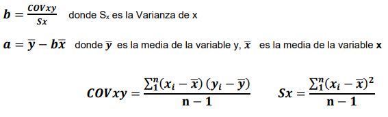

Recta de regresión
La recta de regresión es una herramienta estadística que sirve para estudiar la relación entre dos variables numéricas, una dependiente y otra independiente. La recta de regresión representa gráficamente la tendencia de los datos observados y permite estimar el valor de la variable dependiente a partir del valor de la variable independiente. La ecuación general de la recta de regresión es:
y= bx +a+€
Donde:
b= Es la pendiente de la recta, este valor debe estimularse a partir de la tendencia de los puntos
a= Es la ordenada al origen, es decir, el punto en el que la recta cruza el eje de las Y
y= Es la variable dependiente
x= Es la variable independiente
€= es el error
Para calcular la recta de regresión se utilizan la siguientes formulas:
